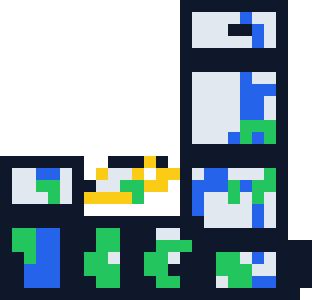
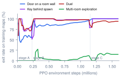

Yugaantar DevForge 2026 · Track 1 · Can it play DOOM?
DoomForge
One 2-million-parameter recurrent network that explores levels it has never seen, builds its own map as it moves, fetches keys, opens locks and fights its way to the exit, deciding in 1.6 ms on a single CPU thread.
+8.48+39%
held-out test score vs +6.11 for our reference design (paired 95% CI +1.47 … +3.24)
5 skills
solved on 100% of unseen test maps: sanity, corridor door, room door, two-key chain, backtrack
4.2×
more of the map explored on ambush levels than our reference; 2.8–3.2× on the other hard tiers
1.6 ms
per decision on one CPU thread, 25× under the 40 ms budget
It plays

An unseen 11-room level, solved. The agent's real path (blue) from spawn (●) through six doors
(orange) to the exit (★) in 915 decisions, with no map and no position given.
It remembers

seen floor
walls
own trail
items
frontier
The map it built in the same episode, from its own observations and movement alone. Rooms,
walls, its trail and the unexplored frontier, read by the network every decision.
ArchitectureMemory in, one network, actions out
64 rays · distance + wall / door / lock / enemy / item
≤ 32 entities · type, bearing, distance, velocity
Vitals + RGB · health, ammo, keys · colour image
EgoMap · own dead reckoning → 8-channel map → heading-up crops at two scales
›
circular conv over rays128
self-attention over entities128
colour CNN: exit signs, lock colours128
map CNN: frontier, doors, keys, trail192
vitals · previous action · pose128
Learned goal head predicts where to go next (exit / key / frontier), fed back into the policy
›
GRU 384
memory across decisions
memory across decisions
6 factorised action heads
move · strafe · turn · attack · use · weapon
move · strafe · turn · attack · use · weapon
Seeded sampling → 9 buttons
reproducible on every map
reproducible on every map
Odometry that holds up in real play
Position error of the agent's own map on 10 validation episodes

Modelling DOOM's turn acceleration, per-tic friction and wall contact gives 2.3× less drift
than naive integration (99 vs 225 units after 500 decisions).
Skills grow through three PPO stages
Exit rate on training maps, sampled from the live policy

Room doors, backtracking and duels climb to 90–100%, and multi-room exploration emerges in
stage C, after the agent is rewarded for revealing new floor.